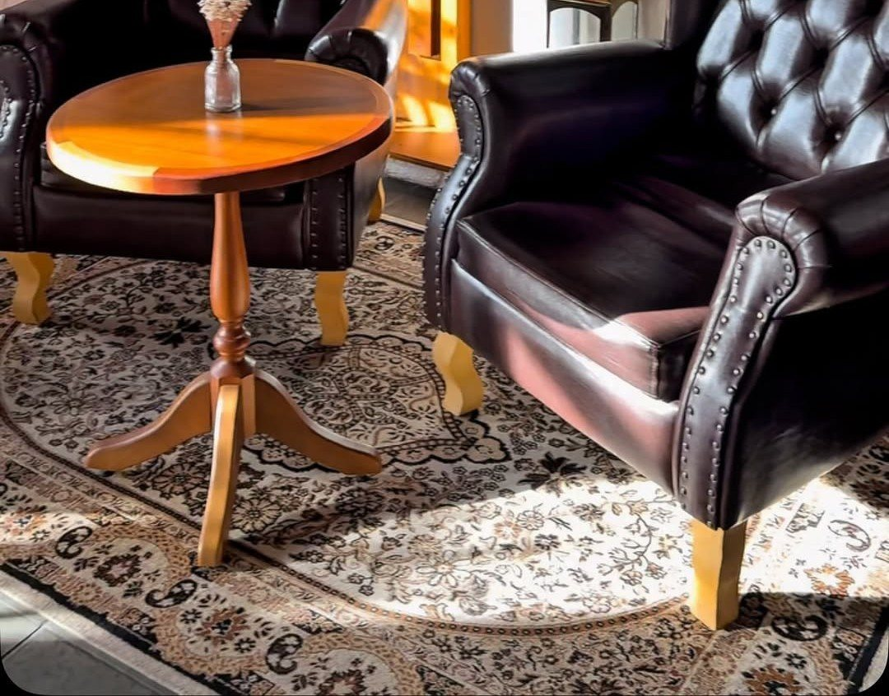

Início · A casa
Um cantinho de calma no Pelourinho
“Pode ser encontro. Pode ser pausa. Pode ser descoberta.” Poltronas Chesterfield, quadros negros, varanda e uma mesa para ler e jogar.
A proposta
Mais do que a xícara
“Porque acreditamos que uma cafeteria pode ser muito mais do que aquilo que está na xícara.”Little England Café, Instagram, 30/09/2026
“A Little England Cafe é mais do que um café, é um lugar para viver o momento.”Little England Café, Instagram, 30/09/2026
O salão
Couro, tapete persa e relógio de parede

Parede de tijolinho branco, quadros, relógio e os quadros negros com os especiais da casa e os bolos do dia.
A varanda
Janela aberta para o Centro Histórico

A legenda da casa chama: “Dias quentes pedem aquele chá gelado bem refrescante aqui na nossa varanda”.
Sem pressa
Uma mesa para ler e jogar
“Uma mesa para sentar, um livro para folhear, um jogo para compartilhar, uma conversa que se estende, um café para acompanhar.”Little England Café, Instagram, 30/09/2026
“Tem dias em que tudo o que a gente precisa é de um lugar onde não exista pressa.”
Imprensa e guia
Quem já falou da casa
Visit Salvador da Bahia · 01/2026
“uma cafeteria temática britânica que convida o público a viver a experiência de uma típica casa de campo inglesa no coração do Centro Histórico”
A Tarde · 18/04/2026
“No Centro Histórico, o café segue uma proposta inspirada na cultura inglesa e atrai tanto turistas quanto moradores”
Pelourinho Dia e Noite
No guia da prefeitura, em “Cafeteria / Pub Café”.
Google · 4,9
110 avaliações em 03/10/2026; a ficha marca “empresa de empreendedoras”.
Dúvidas frequentes
Perguntas comuns
Posso ficar com calma, lendo ou jogando?
É a proposta da casa: “Uma mesa para sentar, um livro para folhear, um jogo para compartilhar”.
Desde quando a casa existe?
É recente no Pelourinho: o Visit Salvador a apresentava em janeiro de 2026 como “aberto recentemente”.
Sem pressa
A mesa, o chá e o scone esperam por você.
Terça a quinta, 9h às 17h · sexta e sábado, 9h às 18h · domingo, 10h às 18h. Mande o pedido de mesa e a casa confirma pelo WhatsApp.